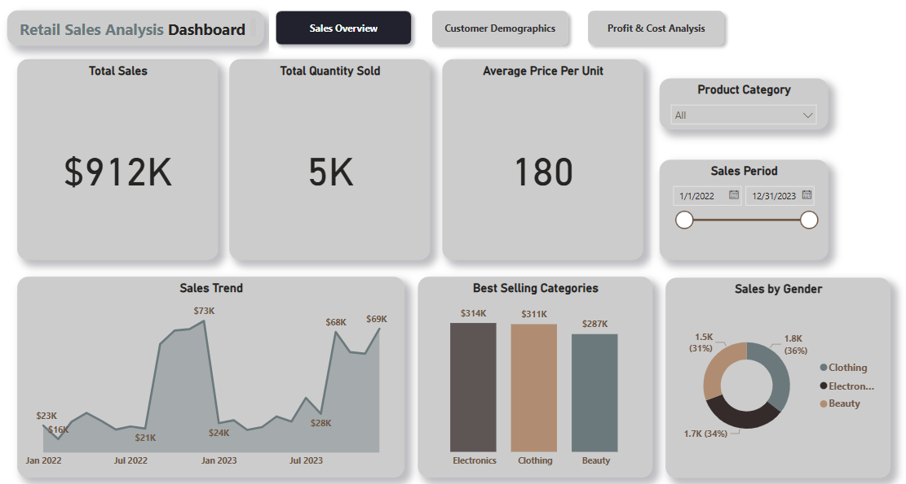
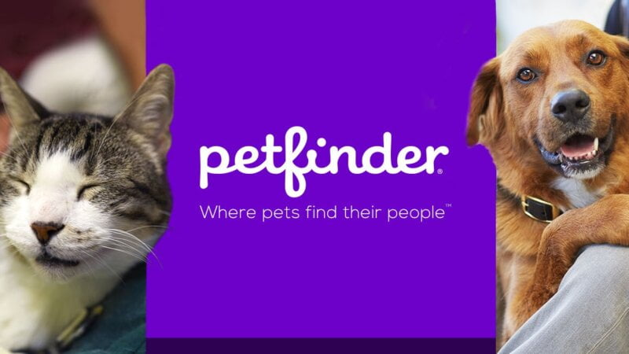

This end-to-end project analyzes retail sales data using SQL and Power BI.
It showcases how raw transactional data can be transformed, analyzed, and visualized to uncover
insights around customer behavior, category performance, and sales trends.


This project focuses on analyzing and predicting customer churn in the telecommunications sector
using machine learning techniques in Python. The dataset used is the Telco Customer Churn dataset from Kaggle,
which contains information about customer behavior, services, and account history.
The primary goal is to build a model that can predict whether a customer is likely to churn,
helping companies take preventive action to retain them.
This project analyzes Apple sales data using SQL and Power BI. It focuses on sales trends, product performance, warranty claims,
and store performance, offering insights into business operations and product quality.

I used Python for web scraping and machine learning to predict NBA players'
salaries based on their performance. I extracted 2020-2021 season stats and 2021-2022 salaries
from Basketball-reference.com to analyze the relationship between performance and salary,
and then built a model to predict salaries from past performance.
This project aims to predict whether a loan application will be approved based on various
applicant features like income, education, credit history, and more. The goal is to assist financial
institutions in automating and improving the decision-making process for loan approvals.

In this computer vision project, I used the Petfinder dataset to predict the likelihood of a
pet being adopted. By analyzing pet images along with metadata (such as breed, age, and description),
I trained a model to identify key visual and contextual features that influence adoption chances.
The goal was to help shelters better understand what makes a pet more adoptable.

Here, I showcase multiple projects with interactive dashboards built in Tableau.
These dashboards present insights from various datasets, highlighting trends,
key metrics, and actionable findings through clean and dynamic visualizations.